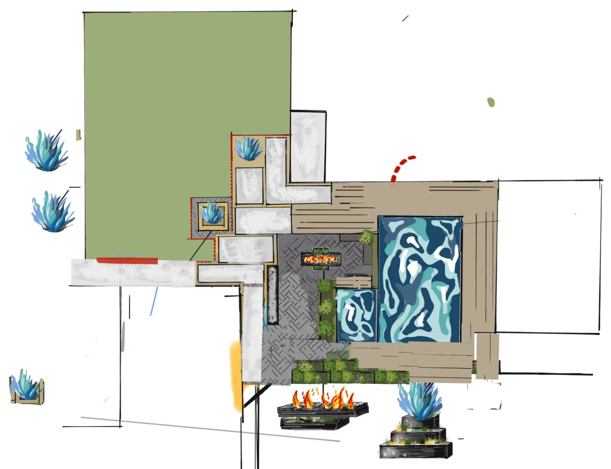

The landscape designer at Red Agave Landscape in Austin, TX is the owner, Jensen Mehrens, who draws every plan. A design starts with a free visit to your property, where we walk the yard and measure it. Then the yard is drawn in plan, and where a plan is hard to picture, the design is sketched over a photo of your own house. The same company builds it with its own crew.

Can You See the Design on Your Own House?
Yes. This sketch is drawn straight onto a photo of the back of the house, so the new work sits where it will be built.
It shows three things a plan cannot:
- The planter floats. It is a cantilever planter: it hangs past its base, and a line of COB light runs underneath it.
- The steps are steel. They come down from the patio in black steel, with light-colored treads.
- The patio grows to one side. Black pavers, 4 feet by 2 feet, extend it past the planter.
A sketch like this answers the question a plan leaves open: what will it look like from the back door? For complex projects, 3D renderings show materials and elevations before you sign off.
See our custom steel planters and landscape lighting pages for how the planter and its light are built.
What Does a Plan Show That a Sketch Cannot?
Where everything goes, and how big it is.

This plan lays out a whole yard at once:
- Water: a large pool and a smaller one, side by side
- Deck: wrapped around both pools
- A fire court: herringbone pavers with a linear fire pit, beside the pools
- Pads: pale pads that step from the court out to the lawn
- Agaves: set in square planters along the way
The two small sketches at the bottom do a third job. They show the fire feature and a tiered planter from the side, so you can see how tall each one stands. Between the plan and the side sketches, the layout and the heights are both decided.
More of our drawings are on the design plans page.
What Does the Designer Look at First?
The site. Design starts at your property, with a walk through the yard and a tape measure. We study:
- Sun and shade: where the shade falls through the day
- Drainage: where water goes after a storm
- Soil: clay, or thin soil over limestone and caliche. Where rock matters, we dig test holes.
- Existing trees: the layout works around them
- Views and privacy: including the sightlines from inside the house
Then the whole property is drawn at once, even when it is built in phases. Design development takes 2 to 4 weeks, depending on scope.
Who Builds What the Designer Draws?
We do. Red Agave Landscape is a design and build company, founded in 2009, so the plan is drawn by the people who build it. Every line on the drawing is something our crew knows how to make: how the steel gets cut and welded, how deep the base goes, and where the water will run.
That is one team and one point of contact, from the first visit to the final walkthrough. See design and build, and a plan next to its finished yard in our post on landscape design services.
Is a Landscape Designer the Same as a Landscape Architect?
No. In Texas, "landscape architect" is a registered title. Section 1052.003 of the Texas Occupations Code requires a certificate of registration to practice landscape architecture, and it bars anyone without one from using the title.
The same section exempts landscape designers, landscape contractors, and anyone preparing plans for a single-family residence. That is the work we do: Red Agave designs and builds residential landscapes.
Every Red Agave project starts with a free consultation, and the CAD plan is included. See our landscape design service, and four more plans in our post on backyard design in Austin.
Questions We Hear
Who is the landscape designer at Red Agave?
The owner, Jensen Mehrens. Every plan is owner-designed, and Red Agave Landscape has designed and built Austin landscapes since 2009.
What does the design consultation cost?
The consultation is free, and the CAD plan is included with your project.
Can I see the design on my own house before it is built?
Yes. Where a plan is hard to picture, the design is sketched over a photo of your house. For complex projects, 3D renderings show materials and elevations before you sign off.
Does the designer also build the project?
Yes. Red Agave is a design and build company, and our own crew builds what the owner draws.
Is a landscape designer a landscape architect?
No. Texas Occupations Code section 1052.003 reserves the title for registered landscape architects. The same section exempts landscape designers, landscape contractors, and plans for a single-family residence.